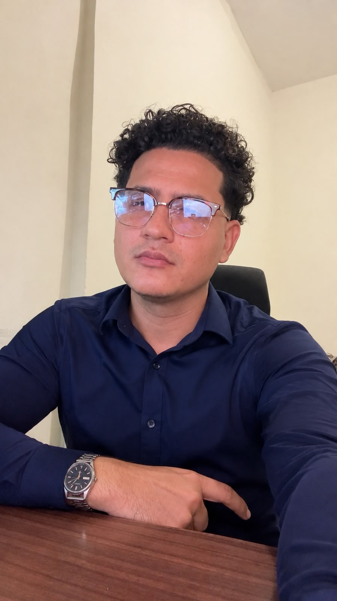
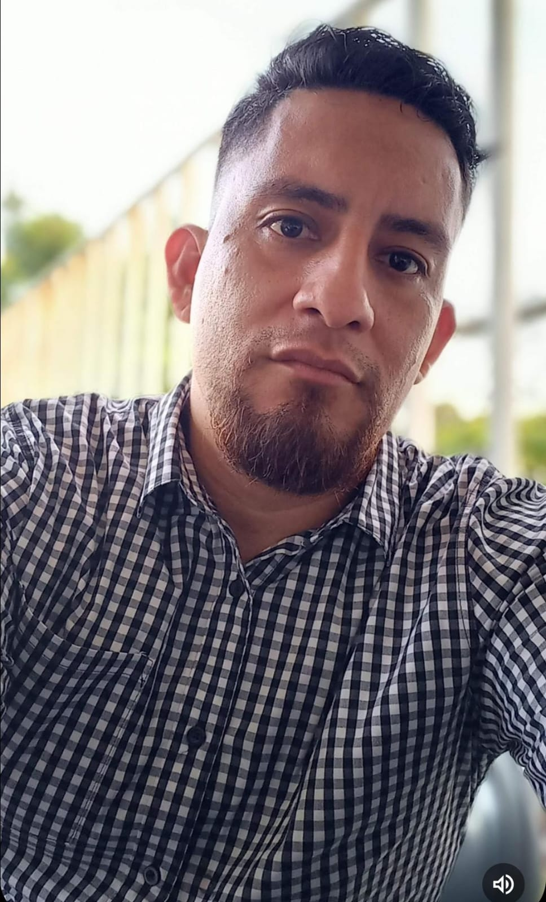

Kevin Alfonso Ramírez Campos
RC21111Coordinador
Equipo de desarrollo
Integrantes responsables del desarrollo del proyecto TortuMar SV, Trabajo Grupal Fase I de Comercio Electrónico (CET 115), Ciclo II 2026.

Coordinador
Desarrollador y Documentador

Diseñador y Desarrollador
Analista y Desarrollador